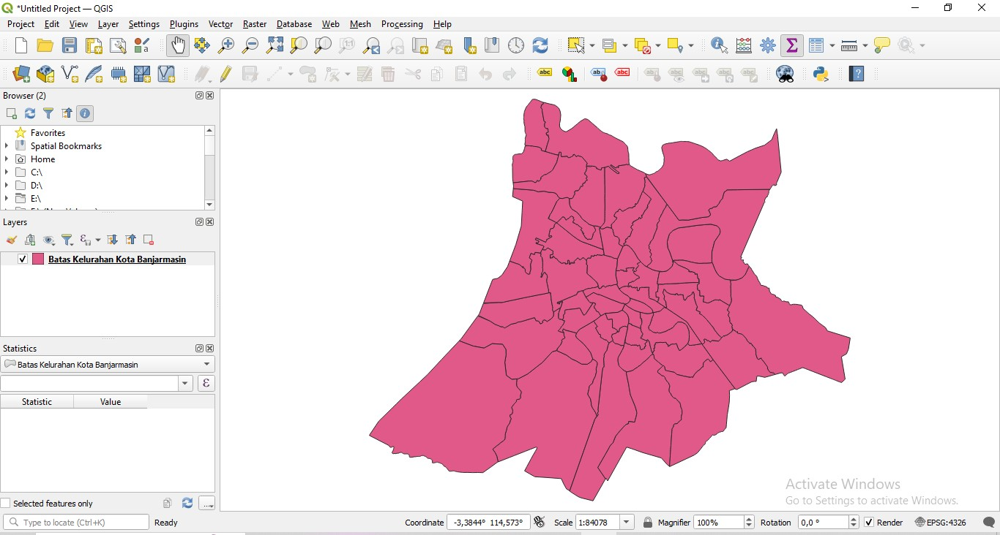
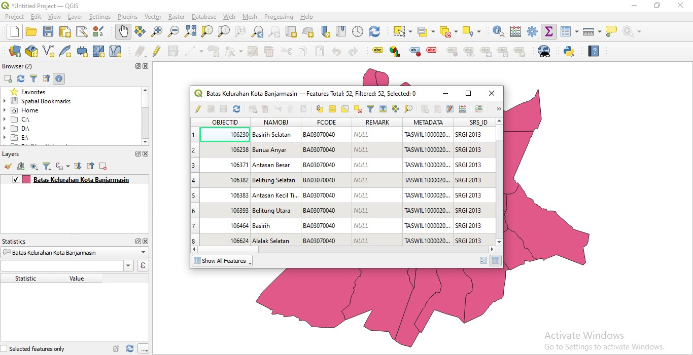
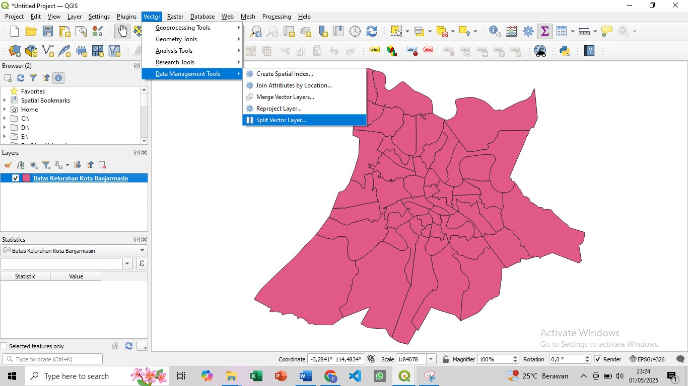
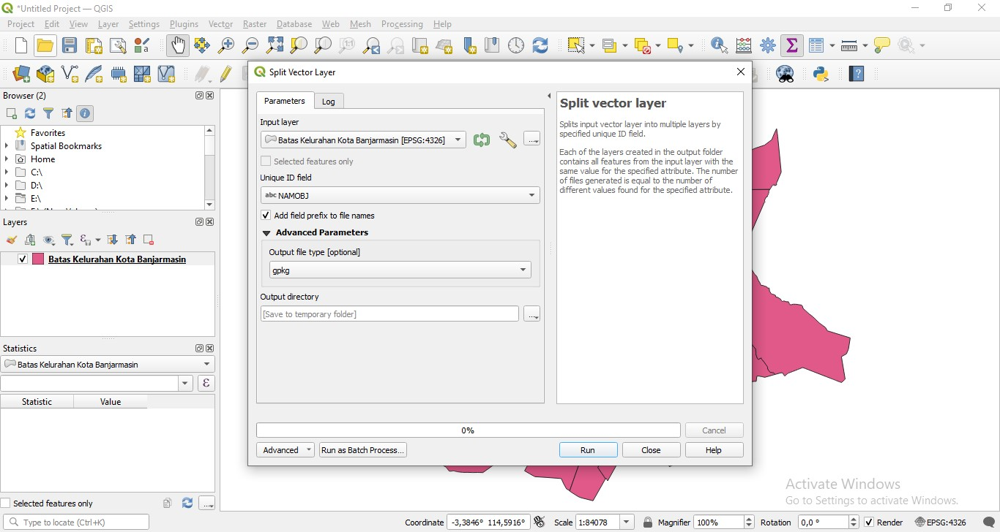
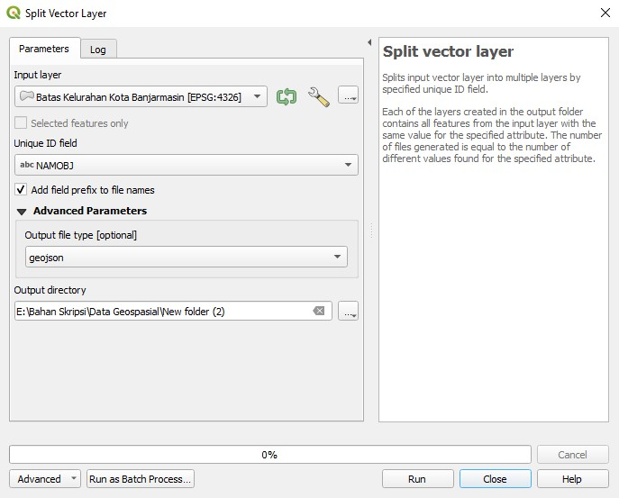

Memfilter Kelurahan di Kota Banjarmasin
1. Pastikan layer Kota aktif dan terdapat atribut kelurahan di dalamnya
2. Jika ingin melihat tabel atribut klik kanan pada nama layer kemudian pilih Open Attribute Table
3. Untuk memisah Kelurahan yang ada di Kota Banjarmasin masuk ke menu Vektor > Data Management Tools > Split Vector Layer maka akan tampil sebagai berikut
4. Pilih atribut yang ingin dipisah dalam hal ini NAMOBJ yang berisikan Kelurahan yang ada di Kota Banjarmasin.
5. Pada Advanced Parameters pilih jenis file yang akan dibuat yaitu file GeoJSON
6. Terakhir pilih tempat penyimpanan file GeoJSONnya dan klik Run